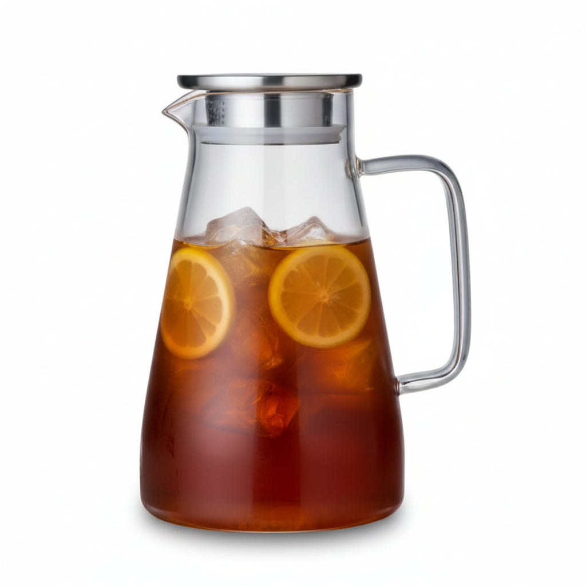
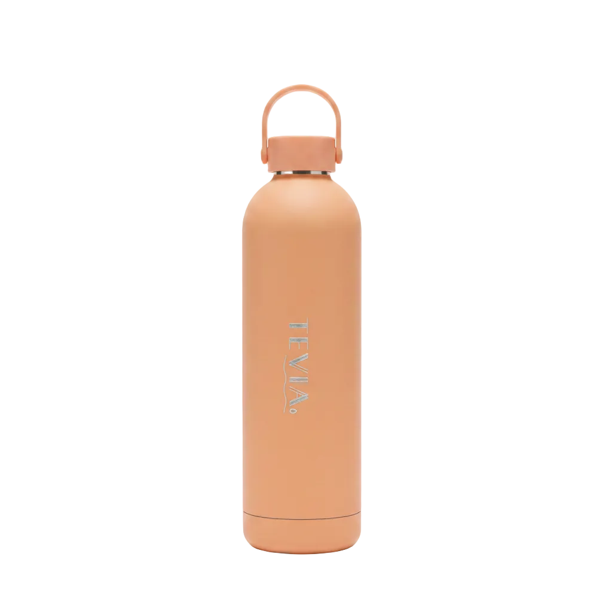

Premium Teaware for Every Tea Moment
Discover the art of tea with TEVIA, your destination for premium teaware designed to elevate every sip. Whether you're exploring the finest blends from Harney & Sons Teas Canada or brewing your favorite Premium Teas Canada, TEVIA offers thoughtfully crafted accessories to complete your experience.
From elegant tea mugs and stylish glass tea mugs to functional iced tea pitchers, every piece combines beauty with everyday practicality. Enjoy precision and tradition with our matcha spoons and matcha whisk, or brew with ease using high-quality tea strainers and tea infusers.
Looking for durability on the go? Our Premium Stainless Steel Water Bottles keep your tea at the perfect temperature wherever life takes you.
Pair your favorite blends with iconic pieces like the Stump Teapot Canada and experience tea the way it was meant to be—simple, refined, and deeply satisfying.
At TEVIA, we believe tea is more than a drink—it's a ritual. Elevate yours with premium teaware crafted for true tea lovers.
Serve and steep with elegance using this 2 L heat-resistant borosilicate glass pitcher, designed for tea lovers who appreciate both functionality and refined presentation. Crafted from durable high borosilicate glass, this pitcher withstands high temperatures, making it perfect for brewing loose-leaf teas, iced teas, or infused water. The sleek stainless steel lid ensures smooth pouring while helping keep contents fresh, and the wide opening makes cleaning quick and effortless. With its generous capacity, this glass pitcher is ideal for entertaining or preparing multiple servings of your favourite teas at home. Minimalist, durable, and versatile, it's a beautiful addition to any tea ritual or kitchen table.


Stay hydrated throughout the day with our premium insulated 750 ml water bottle, crafted from high-quality SUS 304 premium food-grade stainless steel for superior durability, safety, and performance. Designed with a sleek matte finish and modern silhouette, this bottle is perfect for work, travel, sports, and everyday use. Double-Wall Vacuum Insulation (12-24 Hours): Engineered with double-wall vacuum insulation, this bottle maintains your drink's temperature for up to 24 hours. The sweat-free exterior stays cool with hot drinks and warm with cold drinks, ensuring a comfortable grip anytime, anywhere. Available in multiple colours. Please note that actual product colours may vary slightly from what appears on your screen due to differences in monitor settings, display resolutions, and lighting conditions.